Kickoff · 26 de octubre de 2026
La nueva plataforma ERP en la nube, con módulos satélites integrados, para las cooperativas de servicios públicos.
Enzo Varela · CEO de GoodApps
Agenda
Hoy arranca el proyecto más importante que GoodApps encaró hasta ahora. Al final de cada eje vas a saber qué significa para tu área y qué ganamos todos.
01
Porque las cooperativas no pueden seguir esperando. Y nosotros tampoco.
El dolor
“No podemos seguir dependiendo de La Competencia.”
La conclusión unánime de las cooperativas eléctricas en la primera jornada de GoodApps Talks, nuestras charlas de digitalización.
Sigue siendo on premise. Sin nube, sin movilidad, sin escala.
No tiene una API completa: la información queda encerrada y no se integra con nada.
Las cooperativas arman sistemas propios y planillas sueltas para cubrir lo que falta.
Gerentes y consejos no pueden decidir en tiempo real, ni mucho menos predecir.
Resultado: cada cooperativa se arma sus propios sistemas o planillas, la información queda en islas y los gerentes y consejos de administración no pueden tomar decisiones en tiempo real ni hacer predicciones.
Por qué nosotros
El código es nuevo, desde cero, pero no partimos de cero en conocimiento.
+10
años
de Enzo en la Cooperativa de Villa del Rosario, donde desarrolló el sistema que hoy es referencia del mercado.
4
cooperativas
bajo la órbita de Juan Piccoli, gerente de Laguna Larga y ex jefe de sistemas: Manfredi, Lozada, Matorrales y Laguna Larga.
GestiónApps
nuestro ERP
cuyo análisis funcional acelera toda la parte administrativa contable.
100%
de acceso
a la última versión de La Competencia y su base de datos, disponibles para el equipo y Claude sin límites.
1er
cliente
confirmado: la Cooperativa de Laguna Larga, con fecha de arranque definida.
No vamos a aprender el negocio sobre la marcha: ya lo conocemos desde adentro.
Por qué ahora
GoodApps necesita de manera imperiosa salir al mercado con este tipo de soluciones.
Hoy
Mucho riesgo concentrado en un solo lugar.
Con este producto
Un producto propio, recurrente y escalable, en la unidad de negocio de Producto, en un mercado que ya nos está pidiendo una alternativa.
Nuestra visión
Ser la plataforma de gestión que elijan las cooperativas de servicios públicos: en la nube, integrada de punta a punta y potenciada con IA, para que cada consejo decida con datos en tiempo real y cada socio reciba un mejor servicio.
La meta
02
Un ERP core en la nube y un ecosistema de satélites totalmente integrados.
Para quién
Una cooperativa típica no presta un solo servicio. Necesita una sola plataforma para gestionarlos todos.
Ambulancia, fúnebres, ortopédicos y banco de sangre forman los servicios sociales.
El producto
Integrado significa mismos datos, misma experiencia, sin islas.
Operativo, administrativo y contable, para todos los procesos de cada uno de los servicios.
Gestión de medidores inteligentes
Facturación de parques solares comunitarios
Asistentes que automatizan y anticipan
Para socios, proveedores y empleados
Atención ordenada en cada sucursal
Traspaso simple y seguro de los datos desde La Competencia
Diferenciales
Si una cooperativa necesita algo a medida, evaluamos la factibilidad y lo cotizamos por el esfuerzo.
Alcance del paralelo
Alcance tentativo: el detalle lo cerramos con Laguna Larga en las primeras semanas.
Gestión
Inteligencia y socios
Dónde estamos parados
Con ventaja
Reutilizamos mucho del análisis funcional de GestiónApps, nuestro propio ERP: contabilidad, cuentas por cobrar y cuentas por pagar.
El gran desafío
Cada servicio y categoría con sus propias reglas
Impuestos, tasas y percepciones en cada factura
Factura electrónica y obligaciones fiscales
Normativa regulatoria de los servicios
Si resolvemos la facturación mejor que nadie, ganamos la confianza de las cooperativas.
03
IA First: el conocimiento del negocio, convertido en software por Claude.
IA First
Este proyecto se desarrolla 100% con Claude. Tenemos las licencias, el presupuesto y el hardware.
Enzo, Juan y Agustín vuelcan el negocio, apoyados en GestiónApps y en La Competencia.
Cada proceso se convierte en una especificación clara que la IA pueda ejecutar.
Julián y Emmanuel orquestan agentes que programan de forma autónoma el mayor tiempo posible.
Prueban cada entrega. Al final, Juan y Agustín validan contra el negocio real.
El primer cliente valida en la cancha cada entrega.
La clave: carga fuerte de análisis funcional al inicio; después, poco código y poco testing humano. El análisis funcional es el nuevo código.
Arquitectura
El código arranca desde cero. A futuro no descartamos otros lenguajes, como Python para analítica de datos.
React y React Native, con el UX/UI probado de GestiónApps
API en C# que integra el core y todos los satélites
SQL Server Standard: una base de datos por cooperativa
Instancia en Azure, segura y escalable
Un solo producto, una sola versión, cada cooperativa con su propia base.
Equipo
Cada uno tiene un rol claro. El dueño del producto es GoodApps.
CEO
Visión, sponsor y conocimiento del negocio cooperativo
CTO
Liderazgo técnico, arquitectura y desarrollo con IA
COO
Operaciones, implementación y soporte con SLA
Project Manager
Plan, sprints, seguimiento y riesgos
Líder I+D
Desarrollo con IA y agentes autónomos
Análisis funcional y QA
El negocio desde adentro y validación
Análisis funcional y QA
Especificación de procesos y pruebas
Nuevos Negocios
Nuevas cooperativas y oportunidades
Gerente Comercial
Propuesta de valor, precios y ventas
Forma de trabajo
Con planificación al inicio y demo funcionando al final.
Julián, Emmanuel y Juan por las tardes. El resto, unas dos horas por la mañana.
Todo el backlog visible para todos: qué se hace, quién y cuándo.
Revisión de código, tests automáticos y una definición clara de terminado.
Un bloqueo se levanta el mismo día, no en la próxima reunión.
Indicadores de avance, calidad y alcance en cada demo.
Riesgos
No es fácil. Estos son los cuatro riesgos principales y cómo los mitigamos. Además, todo el análisis funcional queda documentado para no depender de pocas cabezas.
El 1 de marzo está cerca.
Cómo lo mitigamos: Alcance mínimo claro para el paralelo y foco absoluto en el core.
Velocidad sin control genera deuda.
Cómo lo mitigamos: Revisión humana, tests automáticos y arquitectura definida desde el día uno.
Tarifas complejas, impuestos, ARCA y ERSeP.
Cómo lo mitigamos: Motor tarifario especificado primero y facturas reales de Laguna Larga como casos de prueba.
Un error en los datos destruye la confianza.
Cómo lo mitigamos: Migrador propio probado con datos reales y conciliaciones antes del by pass.
04
Empezamos el lunes. El 1 de marzo, Laguna Larga en paralelo.
Hoja de ruta
El 1 de marzo de 2027, la base del sistema en Laguna Larga en paralelo. El 1 de julio, con el inicio del ejercicio contable, el by pass definitivo. Las fases intermedias son una propuesta para afinar en el primer sprint.
26 oct 2026
Nov - dic 2026
Ene - feb 2027
1 mar 2027
1 jul 2027
Después del by pass: satélites, nuevas cooperativas y la red de Juan como siguiente frontera.
Arranque
26 al 30 de octubre
2 al 6 de noviembre
Tu rol
Julián, Emmanuel
Liderar el primer desarrollo 100% con IA de GoodApps y marcar el estándar de cómo vamos a construir software.
Juan, Agustín
Ser el corazón del proyecto: lo que ustedes describan es lo que la IA construye.
Estefanía, Marina
Llegar al 1 de marzo con orden y diseñar un soporte que sea diferencial.
Leonardo López, Leonardo Aratano
Llevar al mercado una alternativa que las cooperativas ya están pidiendo.
Qué ganamos
No es solo lo económico: es crecer como profesionales, hacer una empresa más sólida y tener un propósito.
Todos vamos a ser parte de las utilidades. La consultora Compensa definirá el esquema más justo para todos.
Vamos a ser de los primeros en construir un producto de esta envergadura con IA First.
Equilibrar la balanza de clientes es más estabilidad para cada uno de nosotros.
Lo que construyamos va a mejorar el servicio de miles de socios en sus comunidades.
Un desafío nuevo
Un nicho nuevo, un producto fantástico desde cero, el mejor equipo de GoodApps y todo el potencial de la IA. Si lo logramos, todos seremos parte: en lo económico y en nuestro propósito como profesionales.
Nos vemos el lunes.